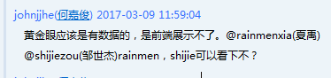
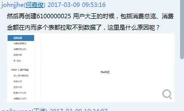
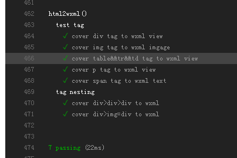

-
前端测试
- Why?
- TDD(mocha&chai)
- BDD(testCafe)
-
近场通信
- 啥玩意？
- 能干嘛？
写个P测试用例啊！
增加工作量，浪费时间
真的吗？

写个前补"0"的通用模块吧
export default function addZero(num) {
if (num < 10) return "0" + num;
return num
}
棒棒的！！
但是...总感觉哪里不对劲...
运行没啥问题呢，肯定是错觉
历史遗留的产物...

这个模块到底能不能改？哪里有复用？
改了之后哪里会受到影响？
要死...

亲~~要来一杯抹茶么？
mocha&chai
mocha是javascript一款测试框架，能上厅堂(浏览器)也能下厨房(node)，chai是断言库，二者配合，口感更佳，合称"抹茶"
部署持续集成工程(github + travis-ci)

妈妈再也不担心我写BUG了

打飞机项目测试好烦啊~~
测个页面性能都要搞好几台手机来玩
就不能来个精灵帮我测么
还真有...
testCafe(怎么都是咖啡...)

关于近场通信啊~~